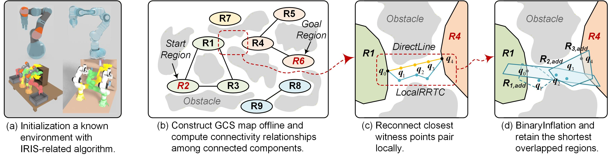
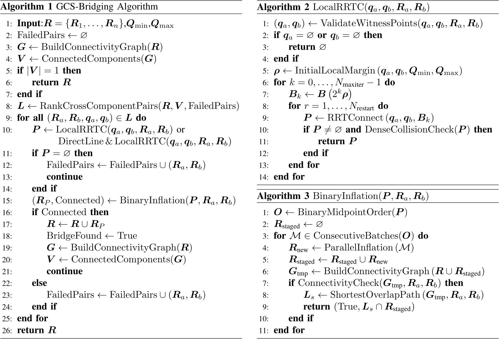

GCS-Bridging
GCS-Bridging: Restoring Connectivity of Disconnected Convex Sets for Graph-of-Convex-Sets Motion Planning

A conceptual illustration of GCS-Bridging in an abstract configuration space. (a) Initialization is first performed in a fully known environment using multiple IRIS-related algorithms. (b) An offline GCS map is then constructed, in which the regions containing the start and goal configurations may be disconnected. The connected components and the relationships among all regions are subsequently computed from the GCS map. (c) Based on the global connectivity information of the GCS map, the algorithm attempts to locally reconnect the closest regions pair while ensuring that the entire reconnection path remains collision-free. (d) BinaryInflation is then performed along the path; once the two disconnected regions are reconnected, only the shortest connection is retained.
Abstract
Graph-of-Convex-Sets (GCS)-based trajectory optimization represents collision-free regions in configuration space as a finite collection of convex sets and directly performs collision-free trajectory planning over these sets, substantially simplifying the planning process. However, existing GCS-based trajectory planning methods generally assume sufficient connectivity among the convex regions and do not explicitly address cases in which the start and goal regions belong to different connected components of the initial GCS map. To address this limitation, we propose GCS-Bridging, which reconnects disconnected convex regions through collision-free point paths followed by convex region reinflation, thereby recovering the feasibility of otherwise disconnected GCS planning problems. Extensive simulations across multiple IRIS-related algorithms and scenarios demonstrate that GCS-Bridging restores missing start-to-goal connectivity in the initial GCS map with a 99.8% success rate. In addition, a hardware experiment on a single-arm Franka platform in a real-world scenario with initially disconnected start and goal regions validates the effectiveness of the proposed method in practical motion planning.
Method

The connectivity graph $\boldsymbol{G}$ and connected components information $\boldsymbol{V}$ are first constructed from the initially generated regions set $\boldsymbol{R}$, corresponding to lines 4–5 of Algorithm-1. If $\boldsymbol{V}$ contains only one component, all regions are fully connected and no further bridging is required. Otherwise, the Euclidean distances in C-space between convex regions belonging to different connected components are computed, together with the corresponding closest witness points pair, and the candidate pairs are sorted in ascending order of distance, corresponding to line 9 of Algorithm-1. After sorting, each pair is connected using either $\mathrm{LocalRRTC}$ or $\mathrm{DirectLine}$ followed by $\mathrm{LocalRRTC}$, corresponding to line 11 of Algorithm-1. If a connection is found, $\mathrm{BinaryInflation}$ is applied by selecting points along the path for IRIS inflation and evaluating the connectivity of the resulting regions, corresponding to lines 17–26 of Algorithm-1. If the two points cannot be connected or connected regions cannot be generated, the corresponding pair is recorded in $\mathrm{FailedPairs}$ and excluded from further connection attempts. Finally, the GCS map reconnected by GCS-Bridging is returned.
Interactive Results
Click each experiment to open the interactive simulation result.

Single-Arm Planning
Interactive visualization of the single-arm motion-planning experiments.
View Interactive Result
Dual-Arm Planning
Interactive visualization of the dual-arm motion-planning experiments.
View Interactive ResultCitation
@article{zhou2026gcsbridging,
title = {GCS-Bridging},
author = {Zhou, Xiaokai and ...},
year = {2026}
}